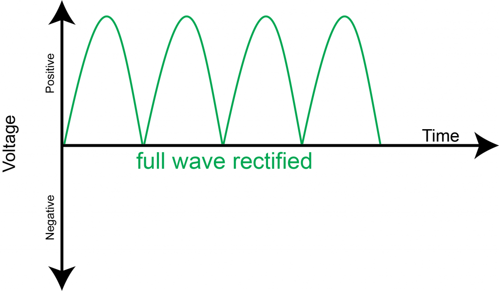
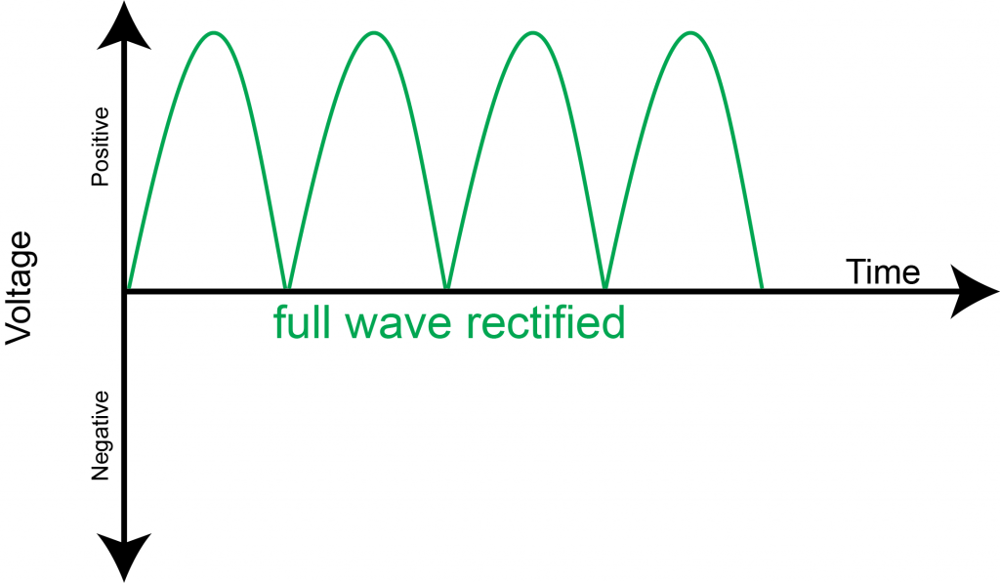

Voltage and its use in Computers
At its base, voltage is a measure of electricity. Voltage may dictate how much energy one thing can use, or how much it can output.
Voltage in a computer works a little bit differently then voltage in other electrical appliances. The voltage in a computer is unique because it is converted from its base AC" energy, into "DC" energy.
AC, DC and Their Attributes
AC
- Alternating Current, moves in many different directions and results in a more efficent way transfer of energy
- AC is used in the majority of households and in buisness buildings or factories, etc.
- AC is an easier way of current usage because although the voltage needs to fluctuate, it does not affect the speed at which the charge moves
DC
- DC, also called Direct Current, only flows in one direction
- DC is mainly used in low - voltage appliances, things such as batteries, and, of course, a computer
- DC is used for low - voltage appliances due to the one - directional flow hindering it's overall voltage output
Why Does the Power Supply Have to do This?
A computer, as referenced earlier, requires DC energy in order to operate properly. This is because DC is the most convienent type of current, with "logic gates" needing to use a remote switch to detect pulses
It's said that AC current is not consistent enough or fast enough to allow AC to work inside of computers.
How Does its Convert Currents?
Simply, the Power Supply converts these currents by manipulating the wavelength and where the waves will fluctuate.
The Power Supply takes the fluctuating waves of the AC current, and shortens the wavelength, along with regulating the directions in which they can move, turning it into a DC current
 


Conclusion
In conclusion, the Power Supply of the computer is a major component that converts AC current into DC current, which allows the computer to operate without much diffulty.